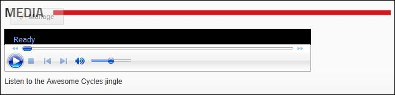

Displaying a Sound File
How to display a sound file using the Media module. The Media module displays controls with play, pause, rewind, volume and other buttons enabling users to manage the sound. Sound file types include mp3, mwa, etc. Note: If the video or Flash is located on your site, you may need the Host to enable you to upload some file types.
- Select
 Edit Media Options from the module actions menu.
Edit Media Options from the module actions menu.
- Expand the Specify Your Media section.
- At Media Type, select Standard File System.
- At File Location/Link Type select either a URL or File link to the sound file. See "Setting a URL Link", See "Setting a File Link", or See "Uploading and Linking to a File"
- In the Alternate Text text box, enter alternative text to describe the sound file. This text is not displayed on the module.

- Expand the Basic Settings section.
- Required. In the Width text box, enter the pixel number to set the length of the sound file control panel. If no value is entered, the width will default to 0 (zero) and the sound file control panel will not be accessible.
- Required. In the Height text box, enter a pixel number to set the height of the sound file control panel. If no value is entered, the height will default to 0 (zero) and the sound file control panel will not be accessible.
- Optional. In the Description of the Media Editor, enter and format the text to be displayed below this image.
- Optional. At Media Alignment, select either None, Left, Center or Right to set the alignment of the image. If no option is selected the default setting Use Module Settings Value is used.

- Expand the Social Integration section and set the following:
-
At Post To Journal, to post details of this media to your Journal - OR - Unto add the media without posting to your Journal. Note: If this setting has been pre-set by an Administrator for all Media modules on this site, then you will be prevented from changing this setting without first checking the "Override Site Settings" check box below.
- At Override Site Settings, to override the site wide settings for Media modules that has been set by an Administrator - OR - Unto use the site wide settings.

-
Click the Update button.

Displaying a Sound File

A sound file posted to the Journal module
Related Topics:
-
See "Managing Allowable File Extensions"